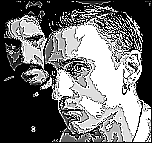

46th Berlin International
Film Festival (1996)
feature by Eddie Cockrell
Snapshots from Berlin
 French director
Bertrand Blier has been known for his saucy and scandalous brand of
cinema since Les Valseuses (Making It in the UK, Going Places in the USA) introduced
Gerard Depardieu to the world in 1973. His International Competition entry Mon Homme might
just do the same for Anouk Grinberg, who copped the best actress Golden Bear for her bold
portrayal of a prostitute who takes in a homeless man who changes her life. And while the
rest of the moviegoing world might have caught up with Blier's sexual frankness (would
Making It be that shocking if released today?), few filmmakers can match him for audacity
and originality.
French director
Bertrand Blier has been known for his saucy and scandalous brand of
cinema since Les Valseuses (Making It in the UK, Going Places in the USA) introduced
Gerard Depardieu to the world in 1973. His International Competition entry Mon Homme might
just do the same for Anouk Grinberg, who copped the best actress Golden Bear for her bold
portrayal of a prostitute who takes in a homeless man who changes her life. And while the
rest of the moviegoing world might have caught up with Blier's sexual frankness (would
Making It be that shocking if released today?), few filmmakers can match him for audacity
and originality.
 American independent filmmaker
Paul Budnitz shot his feature debut 93 Million Miles From The Sun entirely at
night in the eccentric Mission District of San Francisco. The chief strength of the work,
given its German première in the International Forum, is its cheerful quirkiness. But
this soon wears thin, as Budnitz's four self-centred protagonists elicit no sympathy for
their respective plights. Guerilla filmmaking on this level must be encouraged, but young
directors, particularly those who write their own scripts, would do well to remember that
character-driven pieces are only as successful as the audiences' tolerance of the
characters.
American independent filmmaker
Paul Budnitz shot his feature debut 93 Million Miles From The Sun entirely at
night in the eccentric Mission District of San Francisco. The chief strength of the work,
given its German première in the International Forum, is its cheerful quirkiness. But
this soon wears thin, as Budnitz's four self-centred protagonists elicit no sympathy for
their respective plights. Guerilla filmmaking on this level must be encouraged, but young
directors, particularly those who write their own scripts, would do well to remember that
character-driven pieces are only as successful as the audiences' tolerance of the
characters.
The Czech Republic and Slovakia, since
their amicable but somewhat abrupt split a few years ago, have each struggled to maintain
the rich cinematic heritage established internationally by The Shop on Main Street
and Closely Watched Trains in the sixties. On the strength of Czech Jan Sverák's
Jízda (The Ride) and Slovak Martin Sulík's Záhrada (The
Garden), both of which screened in the International Market, each country has at
least one home-grown talent in which to invest.
The Ride's simple story - two guys drive
around the Czech Republic in a car, pick up a mysterious young woman and drive around some
more - is old hat by Hollywood standards and not the reason to get excited about Sverák's
talent. The news here is his fresh eye (how many different ways can you film three people
in a car?) and knack with actors. These elements combine to create an atmosphere of
relaxed, improvisational freshness that is so elusive to some directors (Paul Budnitz take
note).
With The Garden, Sulík continues to
impress with the same writing and directing talent that made Everything I Like an audience
hit on the American festival circuit two years ago. In The Garden, a directionless and
rather puzzled young man moves to his late grandfather's dilapidated country house. But
peace is elusive, as nature and some rather mystical events conspire to teach him some
valuable lessons. Sulík employs a unique story structure, in that each 'chapter' is
announced by an unknown narrator. The tone of the film is so consistent that, even when it
turns inscrutible, audiences can trust the filmmaker to keep them interested.
Farewell to Berlin... Although this is a day for exhausted goodbyes and
vain attempts to fit a mountain of Festival documentation into one suitcase, there are,
believe it or not, still a few Festival theatres showing new movies. The very last
official screening tonight (26th) is at 11:30, of a British film called Nervous Energy -
hope they're passing out samples...